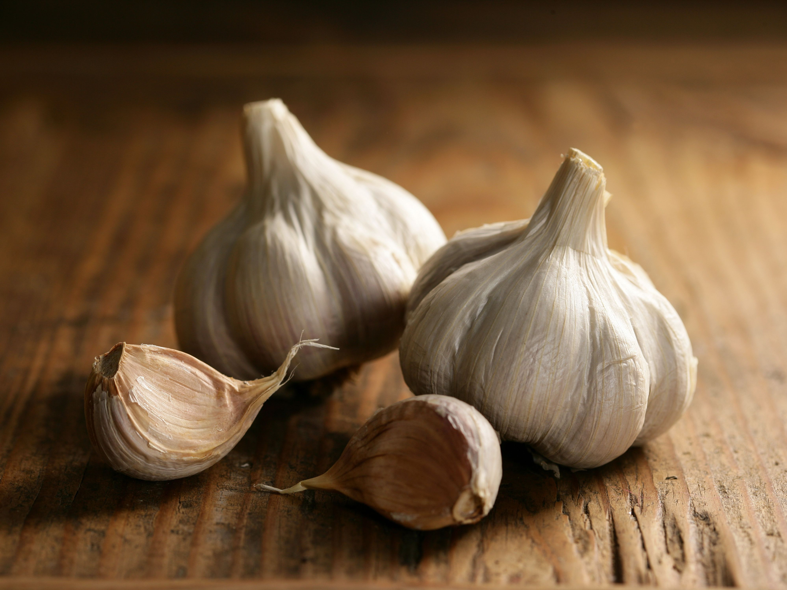

First of all, DO NOT eat outside food, as the ingredients and the quality
of the food is unknown.
1. Citric fruits
Vitamin C is thought to increase the production of white blood cells,
which are key to fighting infections.
Almost all citrus fruits are high in vitamin C. With such a variety to
choose from, it’s easy to add a squeeze of this vitamin to any meal.
2. Broccoli
Broccoli is supercharged with vitamins and minerals. Packed with
vitamins A, C, and E, as well as fiber and many other antioxidants,
broccoli is one of the healthiest vegetables you can put on your plate.
3. Garlic

Early civilizations recognized its value in fighting infections. Garlic may
also slow down hardening of the arteries, and there’s weak evidence that
it helps lower blood pressure.
Garlic’s immune-boosting properties seem to come from a heavy concentration
of sulfur-containing compounds, such as allicin.
4. Ginger
Ginger is another ingredient many turn to after getting sick. Ginger may
help decrease inflammation, which can help reduce a sore throat and
inflammatory illnesses. Ginger may help with nausea as well.
5. Turmeric
You may know turmeric as a key ingredient in many curries. This bright
yellow, bitter spice has also been used for years as an anti-inflammatory
in treating both osteoarthritis and rheumatoid arthritis.